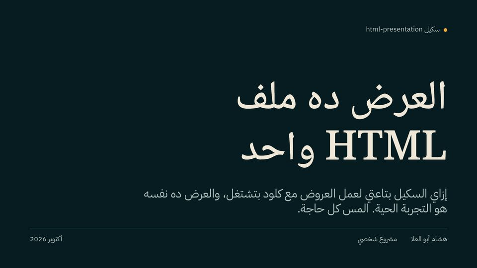
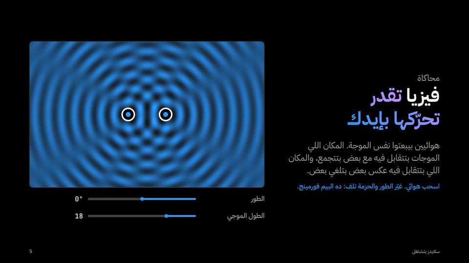
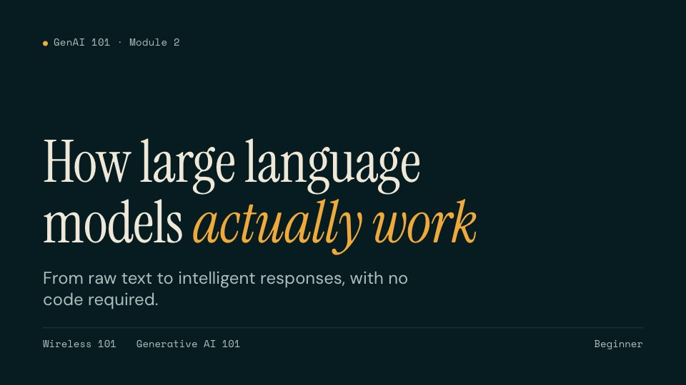
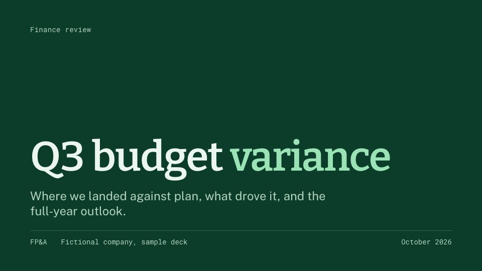
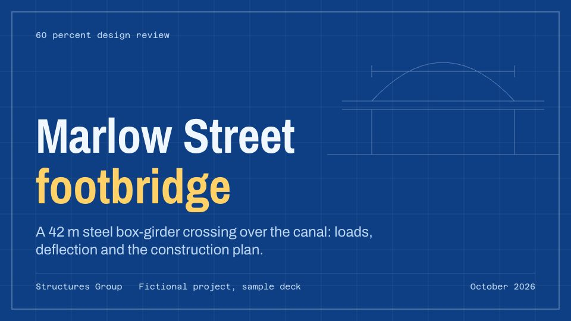
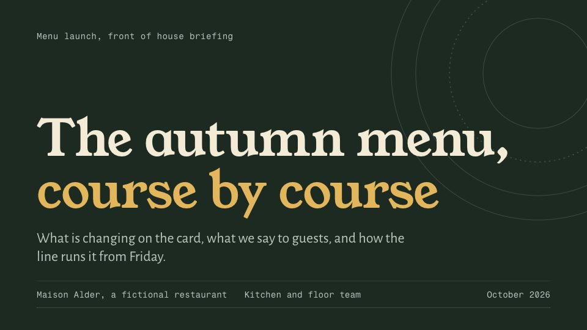
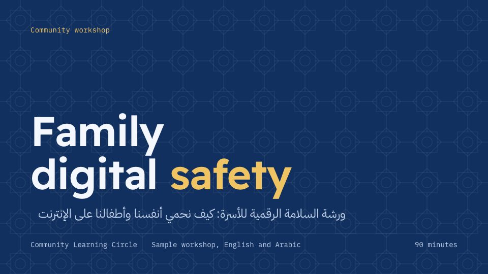

ده العرض الحقيقي، مش فيديو. دوس عليه، وبعدين استعمل أسهم الـ keyboard. جواه، S بيفتح الـ themes، وM بيرسم، وG بيوريك كل الـ slides. افتحه على الشاشة كلها.
الفكرة ببساطة
هو بيعمل شغل ملف PowerPoint أو Keynote: slides، وthemes، وملاحظات للمتكلم، وشاشة مقدّم، وPDF للطباعة. الفرق كله في هو معمول من إيه.
الـ slide ما هيش غير صفحة ويب مقاسها ثابت. بتاعتي 1920 في 1080 pixel، نفس شكل شاشة التليفزيون. والمتصفح بيكبّر أو بيصغّر المسرح ده على قد شاشتك، فالموبايل واللابتوب والـ projector كلهم بيعرضوا نفس الـ slide، بس أكبر أو أصغر.
كل slide هي <section> واحدة جوه الملف. ودي slide كاملة:
<section class="slide" data-layout="statement" data-id="pricing">
<h2>One sentence, set big, is a whole slide.</h2>
<aside class="notes"><p>Pause here.</p></aside>
</section>اسم الـ layout بيقول للـ engine يحط كل حاجة فين. والـ notes دي للي بيقدّم، وبتظهر بس في شاشة المقدّم. والـ id بيدّي الـ slide لينك خاص بيها. ده كل اللي الـ slide محتاجاه.
وتلات طبقات بيعملوا الباقي. HTML شايل الكلام. وCSS بيحدد الشكل: الألوان والخطوط والمسافات. وJavaScript بيضيف الحركة والأدوات. غيّر الـ CSS، ونفس الكلام يبقى تقرير لمجلس إدارة، أو محاضرة في معمل، أو درس في فصل. وده بالظبط اللي الزراير اللي فوق بتعمله.
ليه HTML مكان كويس للـ slides
data-theme="boardroom" والعرض كله يتغير. 32 theme و35 طقم خطوط.deck.html#pricing. وK بينسخه.ولما تحتاج ورق، شباك الطباعة في المتصفح بيحفظه PDF، كل slide في صفحة.
Claude بيعمل إيه، وأنا بعمل إيه
دي الـ Claude Code skill الشخصية بتاعتي، مش بتاعة Apple. بقول لـ Claude العرض لمين، والحكاية، والأرقام الحقيقية. وClaude بيختار layout لكل slide، ويكتبها، ويضيف الـ notes بتاعة المقدّم.
بعد كده فيه checker بيفتح كل slide في متصفح مستخبي، ويدوّر على الحاجات اللي ببطّل أشوفها بعد عاشر تعديل: كلام خارج برا الـ slide، أو خط صغير ما يتقريش من آخر القاعة، أو ألوان مش باينة على بعض، أو chart فيها غلطة في أرقامها. وClaude بيصلّح اللي لقاه ويشغّله تاني.
ولو العرض طويل، Claude بيقسم الـ outline لأجزاء. وكذا مساعد بيكتبوا أجزاءهم في نفس الوقت، وبعدين Claude بيجمعهم في ملف واحد ويقراه من أوله لآخره، عشان يطلع كأن واحد بس اللي كاتبه.
تعديلات صغيرة، في المتصفح على طول
علشان غلطة إملائية أو تاريخ جديد، مش محتاج Claude، ولا أي برنامج. الـ skill جاية معاها editor صغير، وهو نفسه ملف HTML واحد. بيفتح العرض، وأنا بدوس على كلمة في الـ slide وأكتب، وSave بيكتب نفس الملف تاني. الكلام اللي غيرته بس هو اللي بيتلمس؛ وباقي الملف بيفضل زي ما هو بالظبط.
- افتح الـ editor واختار عرض، أو ارمي الملف عليه.
- دوس على أي كلام في الـ slide واكتب. ملاحظات المتكلم تحت الـ slide.
- الـ Find and replace بيشتغل على كل الـ slides، وعلى عنوان العرض كمان.
- احفظ. في Chrome وEdge بيكتب على نفس الملف؛ والمتصفحات التانية بتنزّل نسخة.
جرّبه: افتح الـ editor بعرض الميزانية اللي في الفيديو، أو افتحه فاضي وارمي فيه العرض بتاعك. الحفظ بيديك نسختك إنت؛ ومفيش حاجة بتترفع.
حاجات الـ slide العادية ما تقدرش تعملها
Keynote وPowerPoint بيعرضوا اللي إنت عملته. المتصفح بيشغّله. يبقى الـ slide تقدر تشيل أي حاجة صفحة الويب تقدر عليها: app شغال، وsimulation، وصوت، وcode بتعدّله، ولعبة. طلبت من Claude عرض تاني فيه واحدة من كل حاجة. كل slide فيه شغالة بجد؛ دوس على واحدة والعب.
عرض كامل، شغال. استعمل الأسهم، أو اختار من تحت. افتحه على الشاشة كلها.
شوية من دول البرامج الكبيرة بتعملهم برضه، زي الفيديو والكاميرا. بس أغلبهم ملف الـ slides ما يقدرش يعملهم لوحده. والقايمة دي قصيرة: خريطة تحركها، و3D model تلفّه، وcharts بتاخد أرقامها live، واستطلاعات بتعد إجابات الموبايلات اللي في القاعة، وcaptions وإنت بتتكلم. أي حاجة صفحة الويب تقدر تعملها، الـ slide تقدر.
شكل لكل شغلانة
الـ template جاي بستة أشكال أساسية. وفوقهم فيه مكتبة: شكل لكل مهنة، كل واحد بألوانه وخطوطه وتفصيلة صغيرة من عالم المهنة دي. شبكة oscilloscope لمهندس الـ wireless، وخط رسم قلب للعيادة، وجدول عنوان لوحة رسم هندسي لمهندس مدني، وكارت مسطّر لمنيو مطعم. والعرض بيشيل الأشكال اللي بيستعملها بس، فبيفضل صغير.
شوية منهم، كل واحد عرض كامل. بيفتحوا في tab جديدة.

بيشتغل إزايالعرض اللي فوق في الصفحة دي. شكل Studio.
slides بتشتغلapps وصوت وcode ولعبة جوه الـ slides. شكل Keynote Black.
الـ LLMs بتشتغل إزاي بجددرس معمول من كورس GenAI 101 بتاعي اللي ببلاش. مهندس wirelessشكل Spectrum: شبكة oscilloscope وموجات I/Q.
مهندس wirelessشكل Spectrum: شبكة oscilloscope وموجات I/Q. حالة طبيةشكل Clinic: أخضر مزرق هادي، وأحمر واحد للتنبيه.
حالة طبيةشكل Clinic: أخضر مزرق هادي، وأحمر واحد للتنبيه.
مراجعة ميزانيةشكل Ledger، للمالية.
مراجعة تصميم كوبريشكل Blueprint، للمهندسين المدنيين. عرض تحقيق صحفيشكل Newsroom، للصحفيين.
عرض تحقيق صحفيشكل Newsroom، للصحفيين.
إطلاق منيوشكل Menu، للمطابخ والمطاعم.
ورشة باللغتينشكل Trainer، إنجليزي وعربي في عرض واحد.
كل الشركات والأشخاص والأرقام في العروض دي متألفة. والـ skill مشروعي الشخصي، مش بتاع Apple.
فين بيقصّر
- محتاج متصفح. كل الناس عندها واحد، بس مش هتعرف تفتحه في PowerPoint.
- الخطوط جاية من Google Fonts. من غير إنترنت، العرض بيرجع لخطوط الجهاز بتاعك.
- ده ملف، مش document مشترك. اتنين مش هيعرفوا يعدّلوا فيه في نفس اللحظة.
- الـ editor بيغيّر الكلام، مش الـ layouts. الـ slides الجديدة لسه بتعدّي على Claude.
خد الـ skill
الـ skill اسمها present-in-html، وكل حاجة موجودة على GitHub: github.com/hisham-abuella/present-in-html. هي plugin لـ Claude Code فيها أربع skills: تعمل العرض، تعدّل كلامه، تراجعه على حسب الجمهور والوقت، وتنشره كـ link. في Claude Code اكتب:
/plugin marketplace add hisham-abuella/present-in-html
/plugin install present-in-html@present-in-html-marketplaceوبعدين اطلب عرض. ببلاش، وبرخصة MIT.
اللي خرجت بيه
كنت فاكر إن HTML ده الحاجة اللي ورا المواقع وخلاص. طلع إنه canvas ممتاز لأي حاجة بتتشاف على شاشة: ملف واحد شايل كلامه وشكله وطريقة شغله، وبيفتح في أي حتة. والـ slides كانت أول حاجة جربتها بس. دوس S في العرض اللي فوق واختار شكل؛ دي الفكرة كلها في زرار واحد.
المقال ده وكل العروض اللي في الصفحة دي اتعملوا بـ Claude Code.